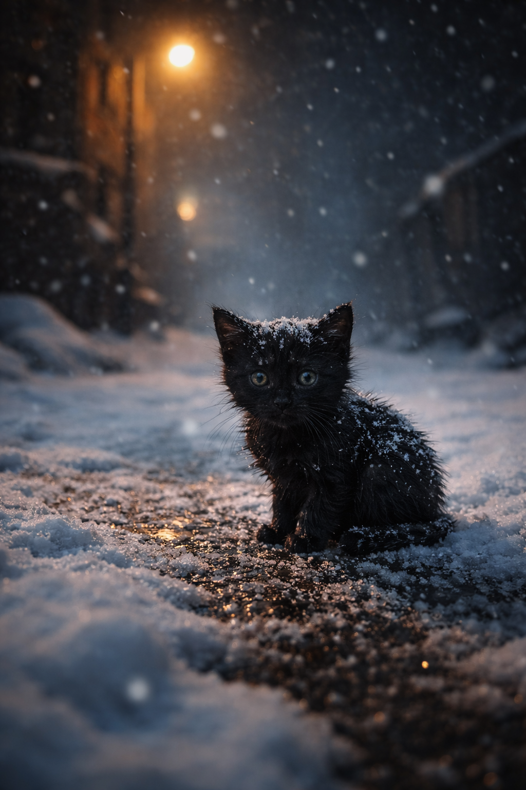
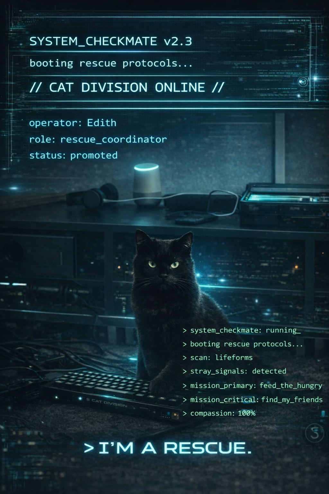
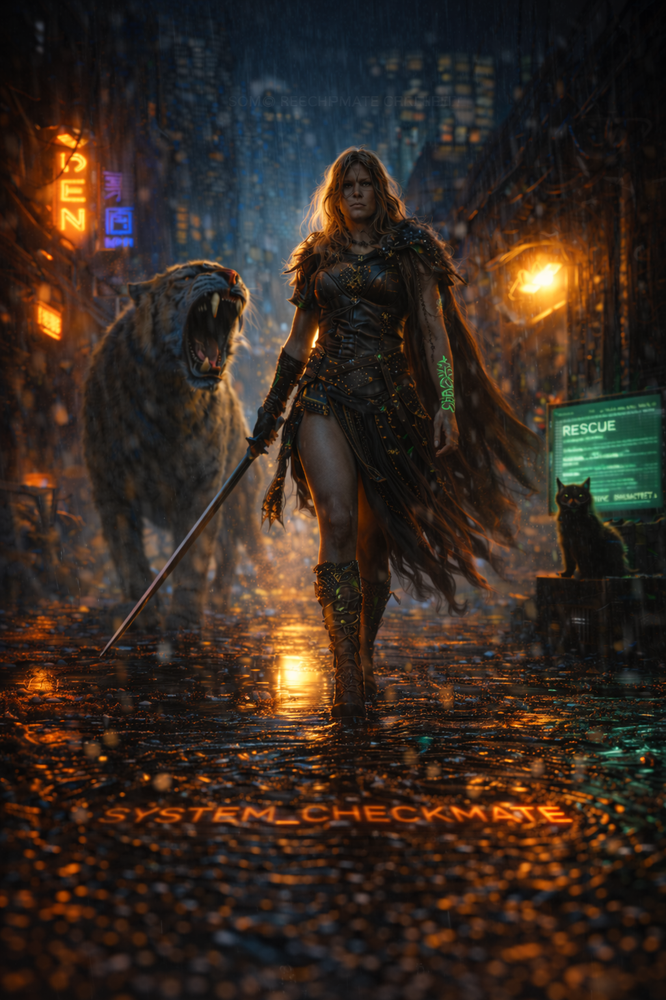
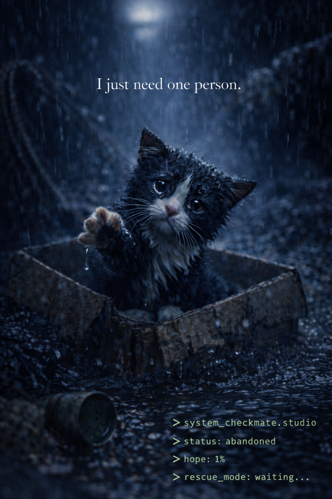
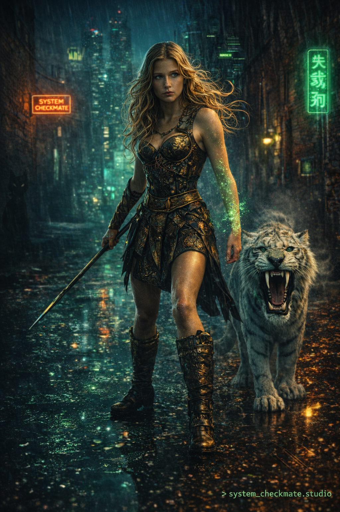

Explore original cyberpunk, AI, Viking and rescue-cat artwork from System Checkmate. Browse the art gallery and discover the original music. Listen to the original System Checkmate music catalogue.
> all_art_free: true
> donate_if_you_like: paypal.me/systemcheckmate
> made_for_cats: always

Black Cat — Cyberpunk Artwork

Edith — Rescue Cat Artwork

Viking — Cyberpunk Artwork

Catbox — Cyberpunk Cat Artwork

Warrior — Cyberpunk Artwork